VMware ESXI 6.5安装教程
设置从IPMI Virtual Disk 3000启动，出现如下界面：
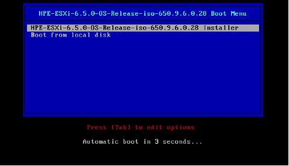
默认选择第一项，回车安装
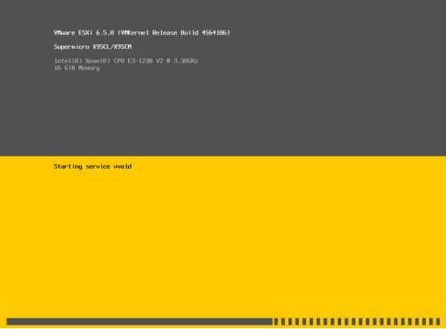
安装程序正在检测服务器硬件信息，如果不满足系统安装条件会跳出错误提示。
检测完成之后会出现下面界面
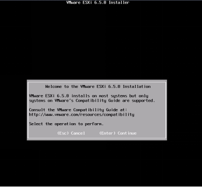
回车
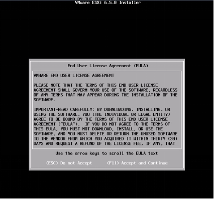
按F11
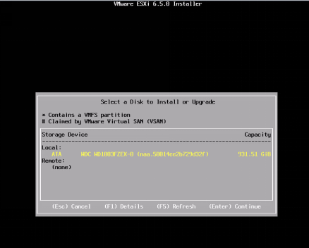
这里列出了服务器硬盘信息，默认回车，出现下面界面
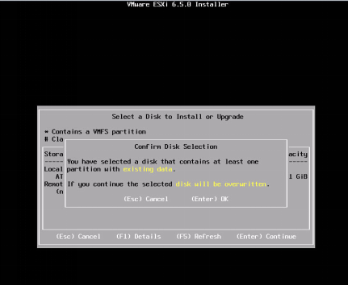
回车
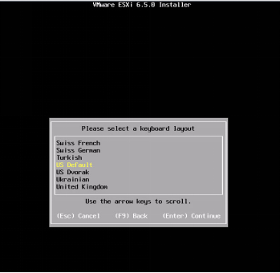
键盘模式，默认，回车
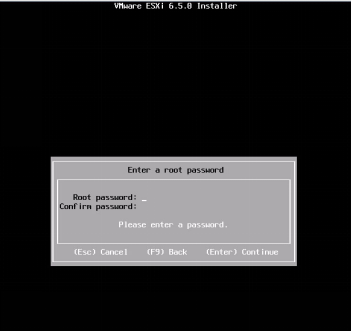
服务器root账户密码设置（注意：密码长度7位以上）
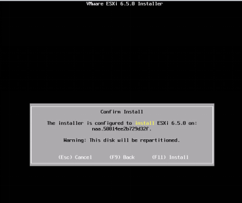
按F11开始安装
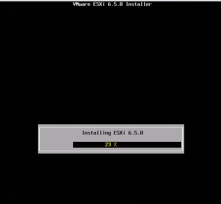
正在安装中
安装完成之后会出现如下界面
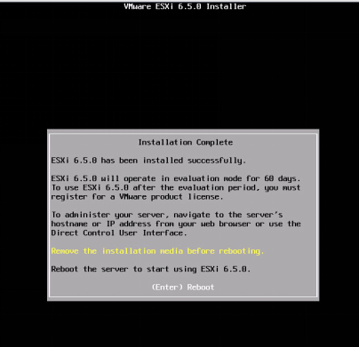
安装完成，弹出镜像，回车重新启动系统。
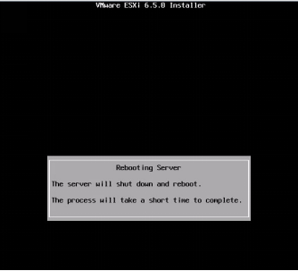
系统正在重启中
设置硬盘启动
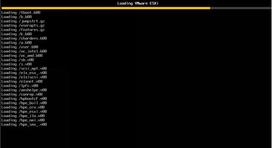
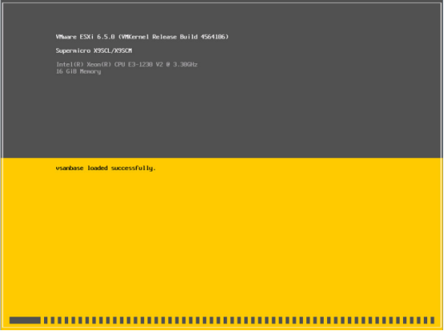
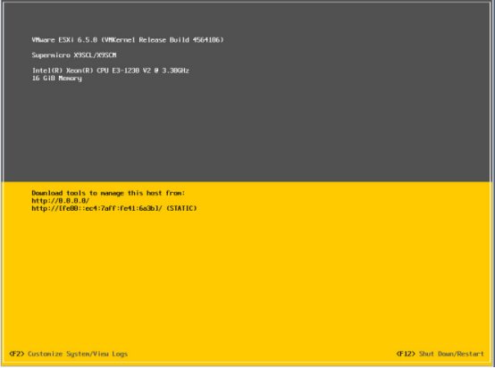
系统启动完成，下面对ESXI进行设置
按F2出现下面界面
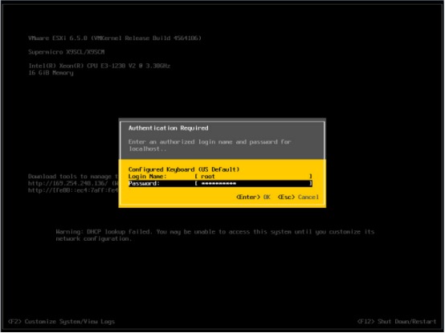
输入root密码，回车
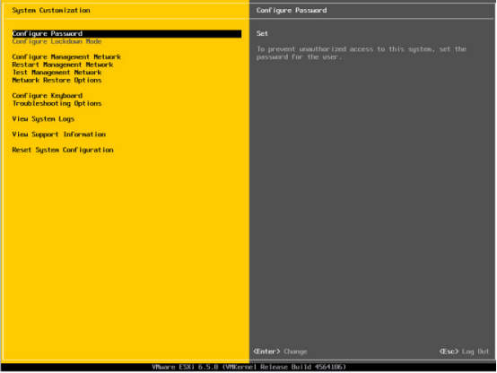
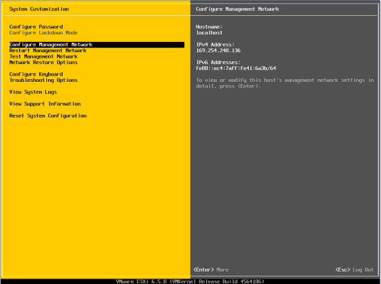
切换到Configure Management Network选项，回车
出现下面界面
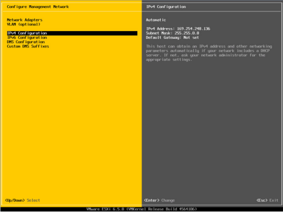
选择IPv4 Configuration 回车
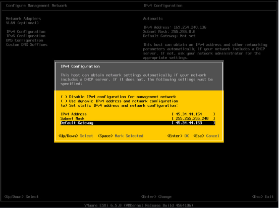
用空格选择第三项，设置为静态IP
输入相对应的IP、子网掩码、网关信息 回车
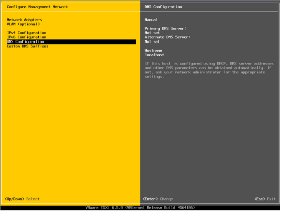
继续选择DNS Configuration 回车
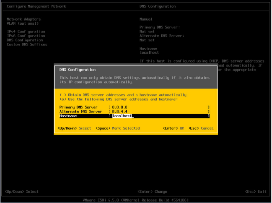
用空格选中第二项，使用自定义的DNS，填写DNS、Hostname 修改为你需要的名字
回车
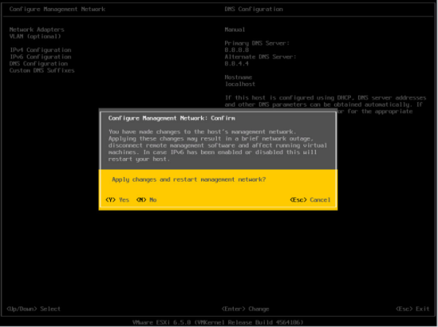
按ESC，输入Y保存上面的配置信息
继续按ESC 返回主界面
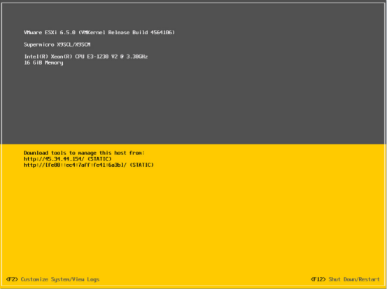
按F12 重启系统

输入 root 密码 回车

按F11
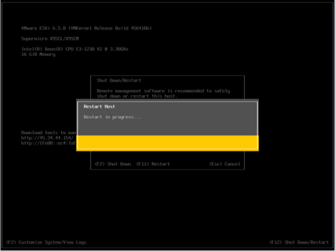
系统正在重新启动
重启之后，出现下面界面
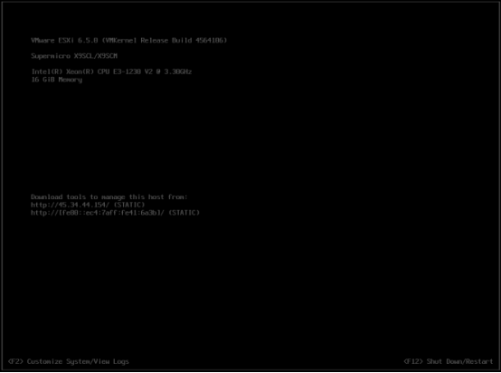
至此，VMware ESXI 6.5安装完成，
选择不同的网卡
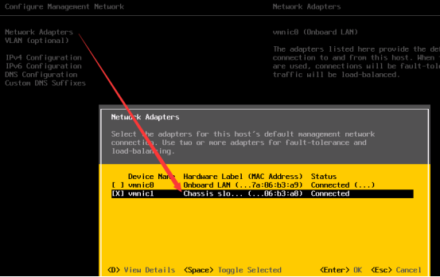